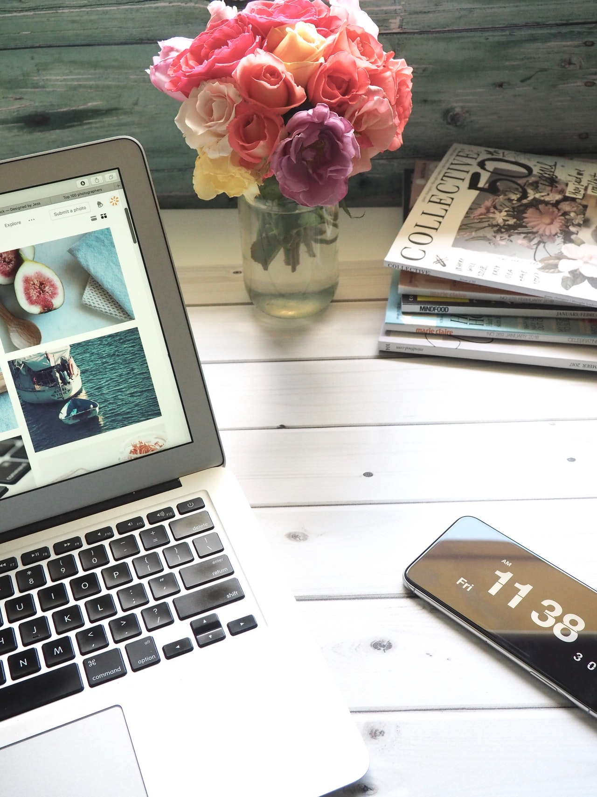
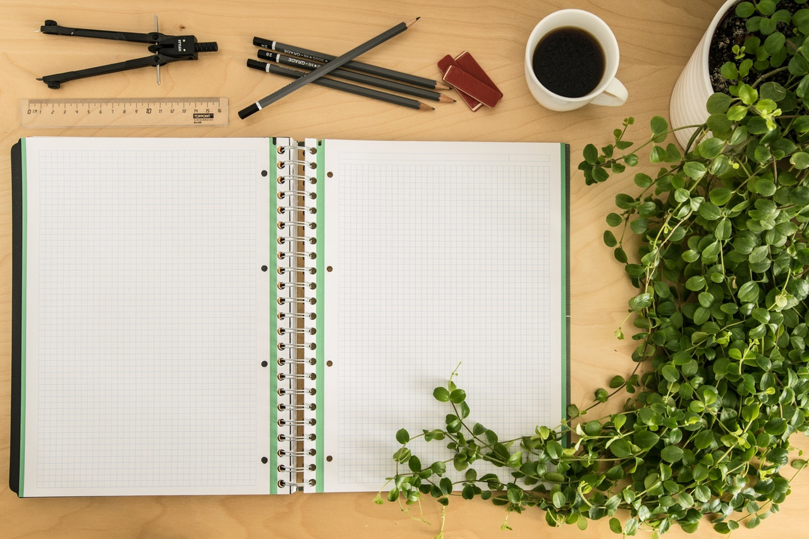
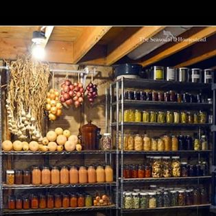

Web Design: Through my lens I see everything by design with design in mind. Check out my git hub to preview my projects.

Content Creation: Check out written works in progress, more like a work in progress when I'm not helping others.

Products Created: Thus far products created in the Sole Vitae, LLC "Apotheke" wellness line are as follows: Infused oils for hair and skin, homemade "organic" and all natural soaps, as well as bladderwrack, sea moss, and burdock root supplements. And more to come!